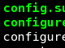
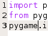
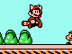
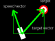
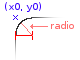

Artículos
Aquí encontrará una serie de tutoriales breves acerca de las técnicas, herramientas y bibliotecas que puede utilizar a la hora de crear videojuegos.


Code::Blocks para compilar ejecutables de Windows en Linux
- Autor: Jorge Araya Navarro
- Fecha: 03/05/2010

Compilación cruzada: Creando programas para Windows desde GNU/Linux
- Autor: Hugo Ruscitti
- Fecha: 31 de Agosto del 2006
Pygame: ¡Ayuda!, ¿Como muevo una imagen?
- Autor: Pete Shinners
- Traducción por: Dora Zárate
- Fecha: Junio del 2007

Compilar e instalar un juego desde su código fuente
- Autor: Hugo Ruscitti
- Fecha: 13 de Marzo del 2005

Pygame: Introducción a Pygame de Python
- Autor: Pete Shinners
- Traducción por: Daniela López Seco
- Fecha: 20 de Enero del 2007

Pygame: Importar e inicializar
- Autor: Pete Shinners
- Traducción por: Hugo Ruscitti
- Fecha: 23 de Noviembre del 2006

Conceptos Básicos para el Desarrollo de Videojuegos 2D
- Autor: Roberto Albornoz Figueroa (RCAF)
- Fecha: 10 de Enero del 2007

¿Como empezar en el Desarrollo de Videojuegos?
- Autor: Roberto Albornoz Figueroa (RCAF)
- Fecha: 2 de Octubre del 2006

¿Cómo hacer juegos?. Un camino al desarrollo de videojuegos
- Autor: Geoff Howland
- Traducción por: José Jorge Enríquez Rodríguez
- Fecha: 19 de Septiembre del 2006

Hackers, Slackers, and Shackles: El Futuro del Software Libre
- Autor: Matt Barton
- Traducción por: Daniela López Seco
- Fecha: 3 de Junio del 2006


Usando seno y coseno
- Autor: Amarillion
- Traducción por: Carlos Gabriel Valentin
- Fecha: 15 de Febrero del 2006

Rectángulo con esquinas redondeadas
- Autor: Fhenix, Geo y Hugo Ruscitti
- Fecha: 18 de Septiembre del 2005


Desarrollando un videojuego paso a paso con SDL
- Autor: Hugo Ruscitti / Gabriel Valentin
- Fecha: 23 de Octubre del 2005


Desarrollo de juegos sobre GNU/Linux
- Autor: Hugo Ruscitti / Gabriel Valentin
- Fecha: 14 de Mayo del 2005